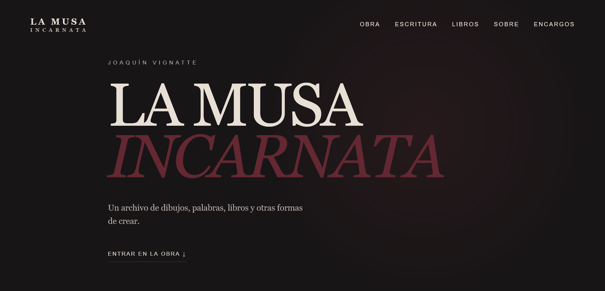
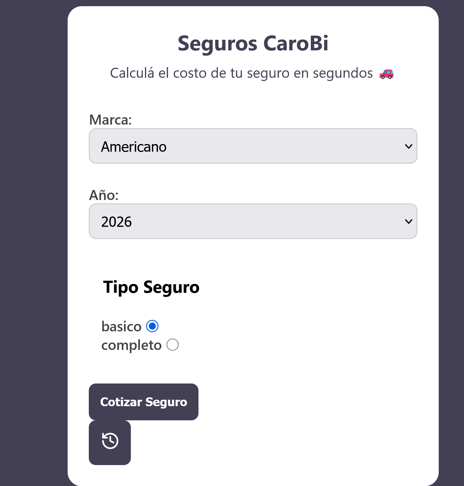
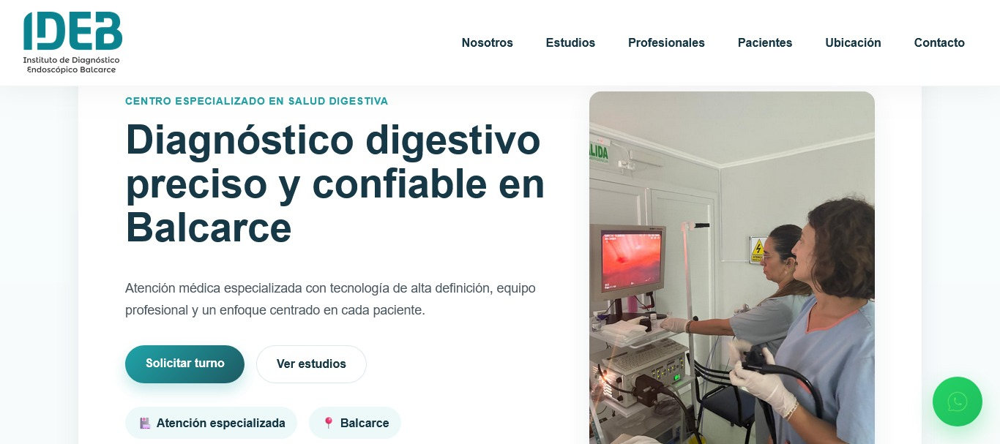
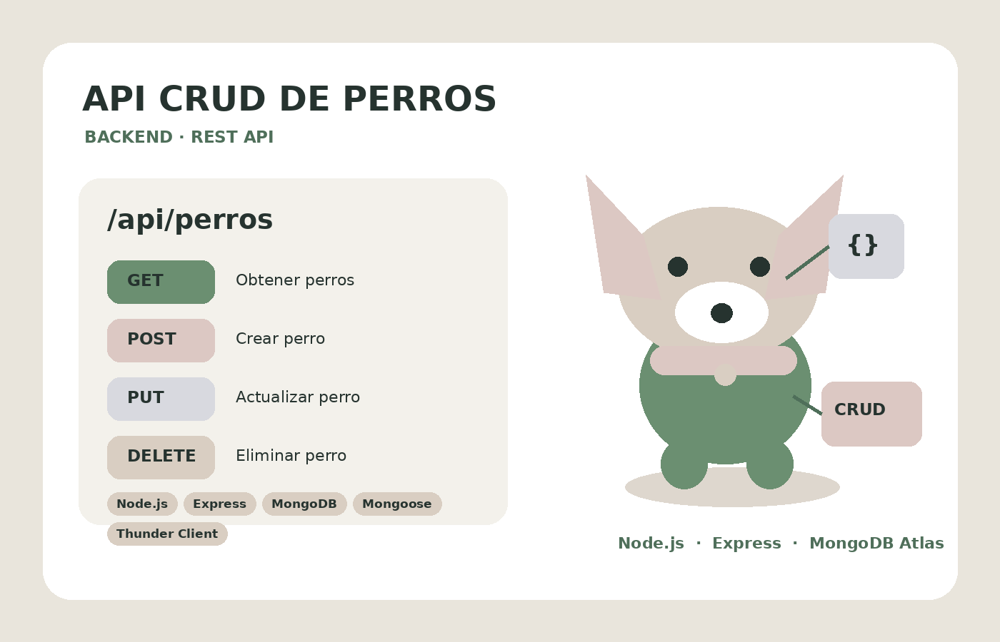
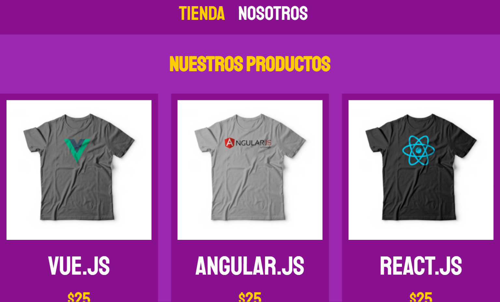
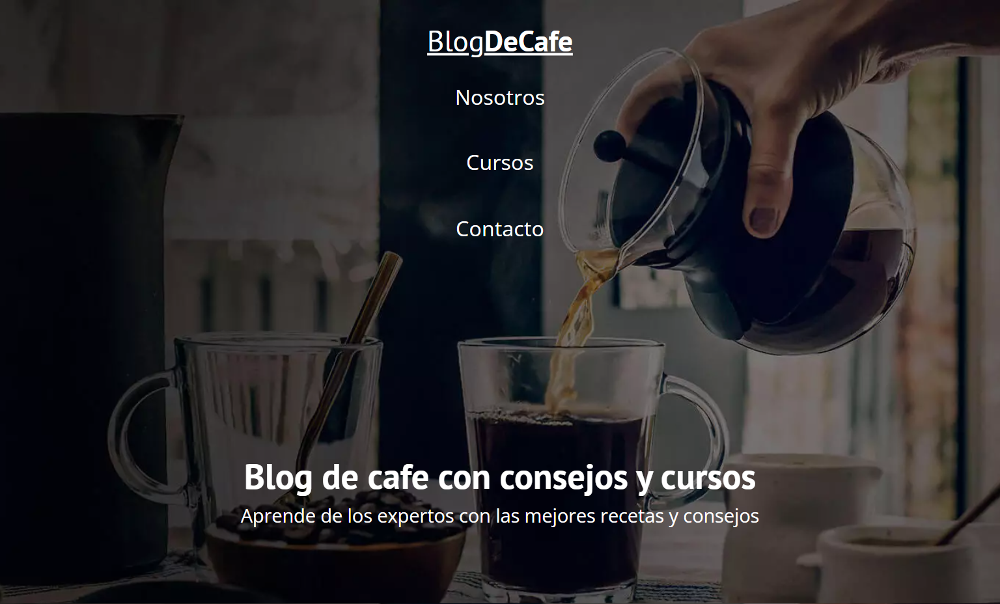

HTML5
CSS3
JavaScript
React
Tailwind CSS
Bootstrap
Desarrollo Web & Soluciones Digitales
Creo sitios profesionales, landing pages, integraciones, APIs y soluciones web combinando frontend, backend y datos.
Web · APIs · Testing · E-commerce · Mantenimiento · Automatización
Soy desarrolladora web en formación, con experiencia práctica en frontend y backend y formación especializada en programación backend.
Me interesa resolver necesidades concretas: desde una web que represente un negocio hasta una API, una integración o una mejora sobre un sistema existente.

Sitio web para un artista independiente, concebido como un archivo vivo de obra, escritura y proyectos.
El proyecto incorpora un panel de administración, una API REST y persistencia de datos con MongoDB.
HTML · CSS · JavaScript · Node.js · Express · MongoDB · Mongoose
AcadémicoAplicación desarrollada en React con cálculo dinámico, validaciones, manejo de estado e historial mediante localStorage.
React · Vite · JavaScript · Tailwind CSS
ClienteRediseño y desarrollo de sitio institucional, trabajando estructura, navegación y presentación clara de la información.
HTML · CSS · JavaScript
BackendAPI REST desarrollada como parte de la Diplomatura Backend de UNTREF para gestionar una colección mediante operaciones CRUD.
Node.js · Express · MongoDB Atlas · Mongoose · dotenv
PrácticaProyecto de práctica enfocado en consumo de API, renderizado dinámico de productos y lógica de carrito.
HTML · CSS · JavaScript · API RESTLanding page desarrollada como práctica frontend, enfocada en jerarquía visual, composición y responsive design.
HTML · CSS · Responsive Design
PrácticaProyecto de maquetación frontend orientado a estructura de contenido, legibilidad y coherencia visual.
HTML · CSSSoluciones concretas para emprendimientos, profesionales, comercios y proyectos que necesitan presencia o soporte digital.
Landing pages y sitios institucionales claros, responsive y pensados para presentar tu negocio o proyecto.
Actualización de contenidos, correcciones, mejoras, revisión de enlaces y soporte para sitios existentes.
Pruebas manuales de GET, POST, PUT y DELETE, casos positivos y negativos, autenticación y reporte de resultados.
Revisión de responsive, navegación, enlaces, formularios y funcionamiento general para detectar problemas.
Configuración, actualización y mejoras en plataformas como Tiendanube, WooCommerce y Shopify.
Organización de procesos, formularios, datos y tareas repetitivas mediante herramientas digitales.
Me contás qué necesitás y qué objetivo querés alcanzar.
Reviso el alcance y propongo una solución acorde al proyecto.
Definimos alcance, tiempos y condiciones antes de comenzar.
Trabajo, pruebo, publico y entrego el resultado.
Si tenés una idea, un proyecto o un negocio y necesitás una solución web, escribime.
Escribime